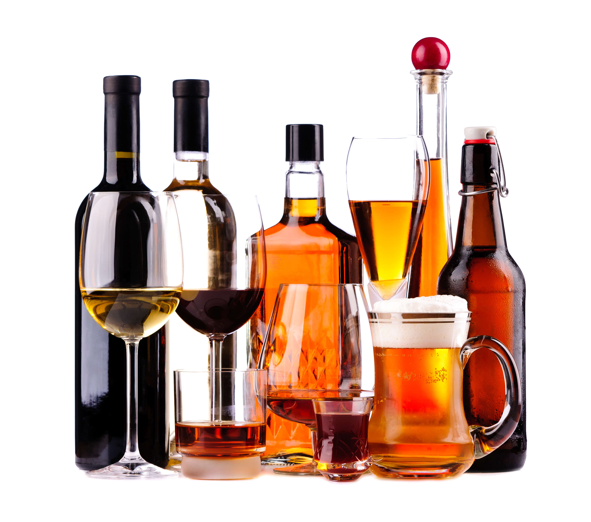
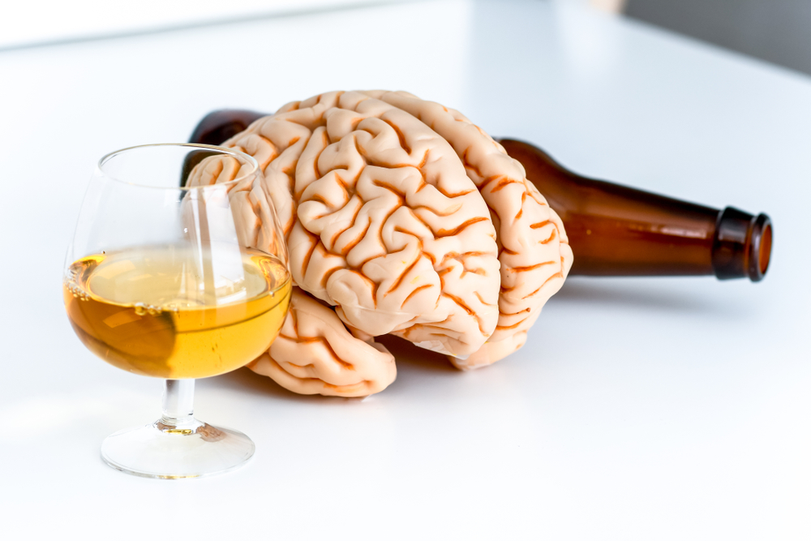

EFFETTI DELL'ALCOL SUL NOSTRO CORPO
Un viaggio alla scoperta degli effetti dell'alcol sul corpo umano e sulla mente.
L’alcol è una delle sostanze più comuni e culturalmente accettate al mondo, ma anche una delle più studiate. Il documentario in questione mira a spiegare le nuove linee guida sul consumo di alcol nel Regno Unito. Analizza sia i rischi associati al consumo che le percezioni comuni riguardo a questa sostanza. Il governo enuncia che, secondo le nuove linee guida, non esiste un livello sicuro di consumo di alcol. Negli ultimi anni in particolare c'è stato un crescente legame tra il consumo di alcol e il cancro, portando molte persone a riconsiderare le proprie abitudini. Lo scopo è proprio quello di chiarire quanto dovremmo preoccuparci del legame tra alcol e cancro e mira a scoprire la scienza più recente a riguardo e come influisce sul nostro corpo; attraverso una prospettiva basata su evidenze, scopriremo come viene metabolizzato, quali sono i suoi rischi e come influisce sulle nostre vite.
 